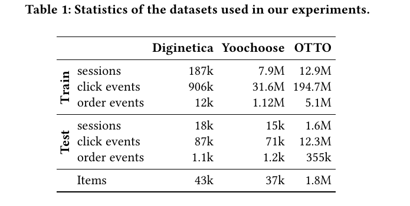
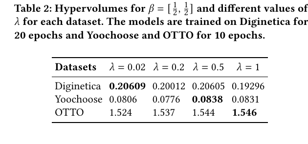
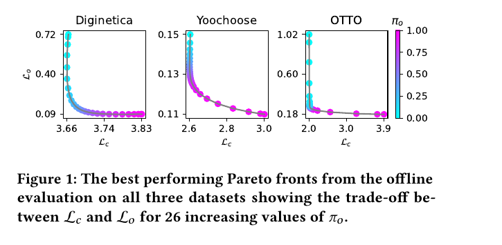
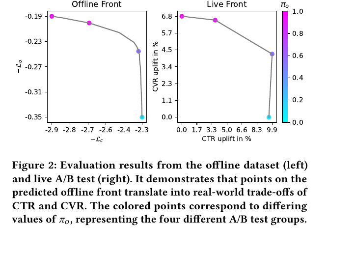

MultiTRON
1. 基本信息
- 标题：Pareto Front Approximation for Multi-Objective Session-Based Recommender Systems
- 作者：Timo Wilm, Philipp Normann, Felix Stepprath
- 机构：OTTO (GmbH & Co KG)
- 时间：2024（RecSys 2024；本地 PDF 页眉为 arXiv v3, 2025-03-30）
- 会议：RecSys 2024
- arXiv：https://arxiv.org/abs/2407.16828
- DOI：https://doi.org/10.1145/3640457.3688048
- 代码：https://github.com/otto-de/MultiTRON
- 本地 PDF：
C:\Users\chaol\Desktop\推荐论文阅读\re-ranking\MultiTRON-Pareto-Front-Approximation-for-Multi-Objective-Session-Based-Recommender-Systems.pdf - 笔记位置：
论文笔记/重排/可控多目标/MultiTRON.md - 分类：重排 / 可控多目标 / session-based recommendation
2. Vault 内相关论文与笔记关系
- 推荐系统重排最新进展：该综述把 MultiTRON 放在“可控多目标重排”路线里，强调它用 preference vector 访问 CTR/CVR 权衡下的 Pareto front。
- CMR：同属“动态偏好控制”方向，但 MultiTRON 正文没有直接引用或对比 CMR，现有 CMR 笔记也没有把 MultiTRON 标成后续或直接替代工作；因此本次不建立需要双向维护的强相关论文链接。
- TRON：MultiTRON 的直接 backbone 来自同一团队 2023 年的 session-based Transformer 工作，但 vault 中目前没有 TRON 独立笔记。
3. 一句话总结
MultiTRON 把 Pareto front approximation 接到 session-based Transformer 推荐模型上：训练时采样点击/下单目标的 preference vector ，推理时用同一个模型通过不同 访问不同 CTR/CVR 权衡点，从而避免为 Pareto front 上每个业务目标组合分别训练一套模型。
4. 问题背景
论文的业务背景是 OTTO 这类大型电商平台。推荐系统同时服务多个利益方：广告或赞助商品更关注点击曝光，销售部门和有机推荐更关注转化、订单和长期顾客价值。点击率和转化率并不总是同向变化，所以单一目标优化会把系统推向某一类利益方，而不是给业务一个可调的 trade-off。
传统多目标推荐常见做法包括训练多套模型、换不同 loss scalarization、加约束或换初始化。问题是 Pareto front 上每个点都可能需要一套模型；当数据集很大、item 集合很大、模型是 Transformer 时，这种做法在训练和推理上都不现实。
MultiTRON 的核心判断是：如果偏好权重可以作为模型输入，那么一个模型就能学习“偏好向量 到排序行为”的条件函数。这样业务不需要重新训练模型，只要在推理时调 ，就能在点击和下单之间移动。
5. 相关工作逻辑
论文先回顾多目标推荐中的 Pareto-efficient / Pareto front 方法。早期路线通常需要多个模型或复杂优化；Pareto Front Learning (PFL) 和 Pareto Front Approximation (PFA) 的价值在于让一个模型近似整条 front。
作者特别区分了两类 PFA 实现：
- Pareto Hypernetwork (PHN)：根据 preference vector 生成模型参数。表达力强，但对推荐系统这种大 embedding、大 item set 的模型不够轻量。
- 把 preference vector 直接作为输入特征：避免 hypernetwork 生成参数，训练和推理更容易扩展。MultiTRON 采用这一条路线。
这也是本文和基于 hypernetwork 的可控重排方法的差异：MultiTRON 不试图生成模型参数，而是在 TRON 这类 session-based Transformer 上增加条件输入，并用 loss 设计约束 front 覆盖。
6. 贡献
论文的贡献按原文可拆成四点：
- 把 PFA 接到 session-based Transformer 推荐上：以 TRON 为 backbone，让单个模型探索点击和下单之间的 trade-off。
- 加入 front coverage regularization：借鉴 non-uniformity loss，减少 Pareto front 变窄或塌缩的风险。
- 离线和线上同时验证：在 Diginetica、Yoochoose、OTTO 三个数据集上做离线评估，并用 OTTO 线上 A/B 验证离线 front 能否映射到真实 CTR/CVR 变化。
- 开源实现：降低后续在 session-based recommender 上复现 PFA 的门槛。
这里最值得记的是第二点。仅采样 并训练条件模型，可能只学到 front 的一小段；regularization 的作用是推动不同偏好下的解分布更均匀，避免模型虽然“可输入不同 ”，但输出实际上都挤在相近策略附近。
7. 方法
7.1 Session 表示
Multi-objective session-based recommender 的输入是一个用户会话，目标是根据过去交互预测下一步 item。原始会话写作：
其中 是会话长度， 表示用户在时间 对 item 做了动作 。本文只考虑两个目标：click 和 order，并且订单通常发生在点击之后。建模时会话被改写为：
是时间 点击的 item， 表示该 item 在截至时间 前是否发生下单。这个定义意味着模型不是输出一个“列表总分”，而是在每个时间步 输出候选 item 的交互分数 ；点击 loss 和下单 loss 都作用在同一个条件模型 上。
7.2 固定权重标量化的问题
普通多目标标量化会固定一个 preference vector：
并最小化：
是点击任务 loss， 是下单任务 loss。这个公式成立的隐藏条件是两个目标已经被压成可加的损失项，并且 只表达业务偏好，不改变标签本身。
问题在于，如果 在训练前固定，那么每个 对应 Pareto front 上的一个点。想覆盖整条 front，就需要训练多套模型。对大规模电商 session recommendation 来说，这个成本不可接受。
7.3 Pareto Front Approximation
MultiTRON 的做法是在训练时从 Dirichlet 分布采样 preference vector：
然后把 加到模型输入里，让推荐模型变成 。训练目标变成对 的期望：
这一步的关键不是公式更复杂，而是训练分布变了：模型每次看到同一个 session 时，可能被要求偏点击，也可能被要求偏下单。推理时再输入指定 ，理论上就能访问对应 trade-off。
这里要注意一个容易误解的点：MultiTRON 没有为点击和下单分别训练两个模型，也不是训练后线性混合两个模型输出。它训练的是同一个条件推荐模型 ，两个 loss 使用同一套输出分数，只是目标权重随 变化。
7.4 Coverage regularization
论文指出，单纯采样 仍可能得到狭窄 Pareto front。因此它加入 non-uniformity regularization：
其中 ， 是 Kullback-Leibler divergence， 把向量映射为和为 1 的概率分布。文中定义的 可理解为“目标 在当前加权损失中的相对贡献”：
这个正则项不是为了让点击和下单同等重要，而是为了避免某个目标在训练动态中长期支配加权损失，导致不同 下得到的解集中在 front 的窄区域。论文选择这种正则还有工程原因：它避免了 EPO Search 那类每次 forward 后解线性规划的成本，因此训练速度仍接近普通模型。
论文还给了一个几何解释：加入 后，学习到的 Pareto front 期望在 处近似与 inverse preference vector 相交。也就是说，正则不是单纯压低平均 loss，而是在约束“不同 应该落到 front 的不同区域”；如果 长期偏向某个目标，front 就会变窄。
完整 loss 是：
控制 front coverage regularization 的强度。 太小，front 可能覆盖不足； 太大，则可能牺牲主任务 loss 的收敛。实验部分的 Table 2 就是在检验这个权衡。
8. 实验设置
实验使用 Diginetica、Yoochoose 和 OTTO 三个数据集，目标是同时预测 click 和 order。作者要求 item support 至少为 5，session 至少有两次点击；训练/测试按时间切分，Yoochoose 用最后一天做测试，Diginetica 和 OTTO 用最后一周做测试。

Table 1 说明三个数据集难度差异很大。Diginetica 只有 18k 测试 sessions 和 43k items；OTTO 则有 1.6M 测试 sessions、12.3M 测试 click events、1.8M items。这个规模差异很重要，因为 MultiTRON 的主张是“一个模型覆盖 Pareto front”在大规模推荐中更有价值。
模型方面，MultiTRON 使用 TRON session-based Transformer，配置为 3 层、learning rate 、batch size 256，在 NVIDIA Tesla V100 上训练。点击任务用 sampled softmax loss，下单任务用 binary cross-entropy loss。
两个实现细节值得记：
- 选择 softmax，而不是 identity。作者解释是 softmax 梯度更小，在实验中让 front 收敛更稳定。
- ，即训练时从两目标 Dirichlet 分布中采样更偏极端的 ；这有助于覆盖 front 两端，而不只是在中间权衡点附近训练。
离线评估使用 Hypervolume Indicator (HV)，参考点基于各数据集的 nadir points：，，。HV 越大，说明 Pareto front 的覆盖和支配区域越好。
9. 实验结果
9.1 Table 2：正则强度影响 front 覆盖

Table 2 比较不同 的 HV。Diginetica 最好是 ，HV 为 0.20609；Yoochoose 最好是 ，HV 为 0.0838；OTTO 最好是 ，HV 为 1.546。
作者的解释是：更复杂的数据集上，较大的 往往带来更高 hypervolume。这个结论不能简单理解为“正则越大越好”，因为 Diginetica 反而在最小 下最好。更稳妥的理解是：front coverage regularization 对复杂、大规模数据更有帮助，但需要按数据集调参。
论文还强调，把采样参数 加入模型没有明显拖慢训练，也没有增加达到收敛所需的 epoch 数。这一点支撑了它相对 PHN/EPO 的工程可用性：MultiTRON 的额外控制能力主要来自条件输入和 loss，而不是显著增加推理结构。
9.2 Figure 1：离线 Pareto front

Figure 1 展示三个数据集上最优 HV 对应的 Pareto fronts。横轴是 ，纵轴是 ，颜色表示逐渐增加的 。点沿曲线移动，说明不同 order preference 确实对应不同的点击/下单 loss trade-off。
这张图要看的不是某一个点，而是曲线有没有覆盖前沿。Diginetica 和 OTTO 上曲线有明显的“拐角”：一端强调 order loss，另一端强调 click loss，中间是可调区域。Yoochoose 的 front 更平滑，说明在这个数据集上点击和下单目标之间的冲突形态不同。
需要注意，图中 loss 越低越好；后面的线上图为了展示收益，用的是 、 或 CTR/CVR uplift，所以方向会反过来。笔记回看时不要把 loss 曲线和 uplift 曲线的坐标含义混在一起。
9.3 单目标 click 性能没有明显损失
为了确认 MultiTRON 不是牺牲主推荐质量换可控性，作者报告了 时的 Recall@20：
- Diginetica：0.529；同 backbone 单点击 TRON 为 0.541，约 -2.2%。
- Yoochoose：0.724；同 backbone 单点击 TRON 为 0.732，约 -1.1%。
- OTTO：0.485；同 backbone 单点击 TRON 为 0.472，约 +2.8%。
这个结果支撑一个比较实用的结论：MultiTRON 在获得多目标控制能力后，click-only 场景下仍接近单目标 TRON。它不是在所有数据集上都超过单目标模型，但损失足够小，说明条件化训练没有明显破坏 backbone 的推荐能力。
9.4 Figure 2：离线 front 能映射到线上 A/B

Figure 2 是本文最关键的工程证据。左图是 OTTO 离线数据上的 front，用 和 表示越大越好；右图是线上 A/B 中四个 组对应的 CTR uplift 和 CVR uplift。
线上实验使用 2024 年 5 月 OTTO 私有数据训练模型，下一周做 live A/B test，四个实验组使用不同 。结果显示：
- 更高 的点对应更高 CVR uplift。
- 更高 的点对应更高 CTR uplift。
- 当 CTR uplift 接近 9.9% 时，CVR uplift 接近 0；当 CVR uplift 接近 6.8% 时，CTR uplift 接近 0。
这说明离线 Pareto front 并不只是数学图形，而能转化为线上真实业务指标的可控 trade-off。对工业重排来说，这比单纯报告离线 Recall 或 NDCG 更有价值，因为最终问题是“业务能否通过一个控制量稳定换取不同目标”。
10. 结论与限制
论文结论是：PFA 可以有效迁移到 multi-objective session-based recommender。MultiTRON 用同一个 TRON backbone 覆盖点击和下单之间的 Pareto front，避免每个权衡点训练一套模型；regularization 改善 front coverage；离线 front 在 OTTO 线上 A/B 中能映射到 CTR/CVR trade-off。
局限也比较清楚：
- 本文只做两个目标：click 和 order。更多目标时，Dirichlet 采样、front 可视化、HV 评估和正则项稳定性都会更复杂。
- 需要调参，不同数据集最优值不同；论文没有给出自动选 的策略。
- 线上实验展示的是四个 组，不是连续密集扫描，因此只能证明可控方向成立，不能完全证明 front 上每个点都稳定可用。
- MultiTRON 解决的是“给定 preference vector 后模型如何响应”，没有解决业务系统如何自动选择最优 。
11. 记忆锚点
- 一句话：MultiTRON = TRON backbone + preference vector input + Pareto front approximation loss + coverage regularization。
- 核心差异：不使用 hypernetwork 生成参数，而是把 直接作为输入，适合大规模推荐模型。
- 核心公式：同一个 同时服务 click loss 和 order loss，训练时对 取期望。
- 核心图表：Table 2 看 如何影响 HV；Figure 1 看离线 front；Figure 2 看离线 front 是否转成线上 CTR/CVR trade-off。
- 和重排研究的关系：它不是生成式 list reranking，也不是规则重排；更像“多目标 session ranking 的可控条件模型”，可作为后续研究“一个模型多套业务权衡”的代表基线。
12. 图表覆盖检查
- 设计图：本文没有单独架构图；TRON backbone 和 preference vector 条件输入已在方法公式与流程中解释。
- 主结果表：Table 1 数据规模、Table 2 hypervolume/正则强度均已嵌入并解释。
- 消融/线上图表：Figure 1 离线 Pareto front、Figure 2 离线 front 到线上 CTR/CVR trade-off 均已覆盖； 正则强度分析由 Table 2 承担。